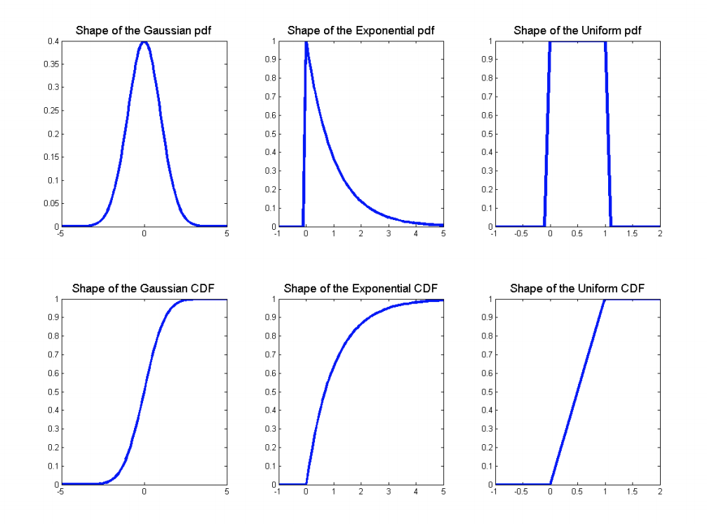

Random Variables
Discrete random variables:
\(X ∼ Bernoulli(p)\) (where 0 ≤ p ≤ 1): one if a coin with heads probability \(p\) comes up heads, zero otherwise
PMF: \(p(x)=\begin{cases}p & x=1\\1-p & x=0\end{cases}\)
- Mean: \(p\)
Variance: \(p(1-p)\)
$X ∼ Binomial(n, p) $ (where 0 ≤ p ≤ 1): the number of heads in \(n\) independent flips of a coin with heads probability \(p\).
PMF: \(p(x)=\left(\begin{array}{c}n\\ x\end{array}\right) p^x(1-p)^{n-x}\)
- Mean: \(np\)
Variance: \(np(1-p)\)
$X ∼ Geometric(p) $(where p > 0): the number of flips of a coin with heads probability \(p\) until the first heads.
PMF: \(p(x)=p(1-p)^{x-1}\)
- Mean: \(\frac{1}{p}\)
Variance: \(\frac{1-p}{p^2}\)
- \(X ∼ Poisson(λ)\) (where λ > 0): a probability distribution over the nonnegative integers used for modeling the frequency of rare events.
- PMF: \(p(x)=e^{-\lambda}\frac{\lambda^x}{x!}\)
- Mean: \(\lambda\)
- Variance: \[\lambda\]
- Properties: Poisson random variable may be used to approximate a binomial random variable when the binomial parameter n is large and p is small.
Continuous random variables:
- \(X ∼ Uniform(a, b)\) (where a < b): equal probability density to every value between a and b on the real line.
- PDF: \(f(x)=\frac{1}{b-a}, a \leq x \leq b\)
- CDF: \(F(x)=\begin{cases}0 & x \leq a\\ \frac{x-a}{b-a} & a\leq x \leq b \\ 1 & b \leq x \end{cases}\)
- Mean: \(\frac{a+b}{2}\)
- Variance: \(\frac{(b-a)^2}{12}\)
- \(X ∼ Exponential(λ)\) (where λ > 0): decaying probability density over the nonnegative reals.
- PDF:\(f(x)=\begin{cases}\lambda e^{-\lambda x} & x \geq 0\\0 & otw. \end{cases}\)
- CDF: \(F(x)=\begin{cases}1- e^{-\lambda x} & x \geq 0\\0 & otw. \end{cases}\)
- Mean: \(\frac{1}{\lambda}\)
- Variance: \(\frac{1}{\lambda^2}\)
- \(X ∼ Normal(\mu, \sigma^2)\) : also known as the Gaussian distribution
- PDF: \(f(x)=\frac{1}{\sqrt{2\pi}\sigma}e^{-\frac{(x-\mu)^2}{2\sigma^2}}\)
- CDF: $F(x)=_{0}{z}e{-z^2/2}dx $
- Mean: \(\mu\)
- Variance: \(\sigma^2\)

Conditional distributions \[ p_{Y|X}(y|x)=\frac{p_{XY}(x,y)}{p_X(x)} \\ f_{Y|X}(y|x)=\frac{f_{XY}(x,y)}{f_X(x)} \]
Bayes’s rule \[ \begin{align} P_{Y|X}(y|x)&=\frac{p_{XY}(x,y)}{p_X(x)} \\ &=\frac{P_{X|Y}(x|y)P_Y(y)}{P_X(x)} \\ &=\frac{P_{X|Y}(x|y)P_Y(y)}{\sum_{y^{'}\in V al(Y)} P_{X|Y}(x|y^{'})P_Y(y^{'})} \end{align} \]
\[ \begin{align} f_{Y|X}(y|x)&=\frac{f_{XY}(x,y)}{f_X(x)} \\ &=\frac{f_{X|Y}(x|y)f_Y(y)}{\int_{-\infty}^{\infty}f_{X|Y}(x|y^{'})f_Y(y^{'}) dy^{'}} \end{align} \]
Independence
Problems:
- Let \(X\) be uniformly distributed over \((0, 1)\). Calculate \(E[X^3]\)
\[ F_Y(a)=P(Y\leq a)=P(X^3<a)=P(X\leq a^{1/3})=a^{1/3} \\ \]
where the last equality follows since X is uniformly distributed over (0, 1). By differentiating \(F_Y(a)\), we obtain the density of Y, namely, \[ f_Y(a)=\frac{1}{3}a^{-2/3} , 0\leq a \leq 1 \] Hence, \[ E[X^3]=E(Y)=\int_{-\infty}^\infty af_Y(a)da= \int_{0}^1 \frac{1}{3}a^{1/3}da = \frac{1}{3}\frac{3}{4} a^{4/3} |^1_0=\frac{1}{4} \]